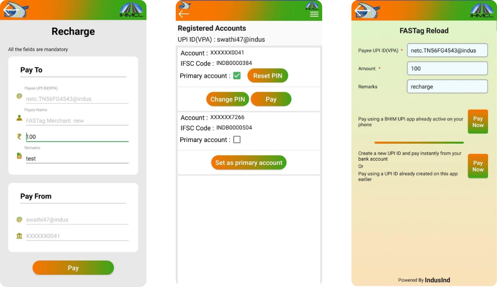
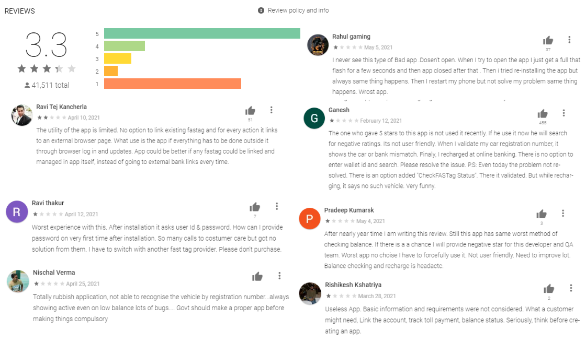
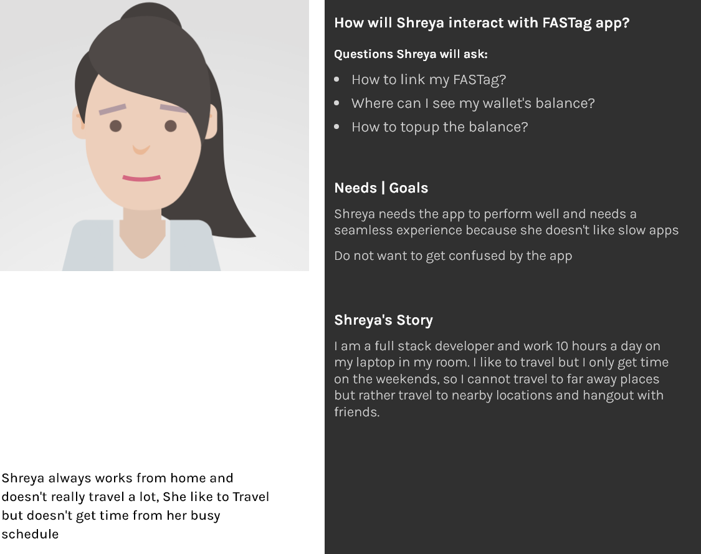
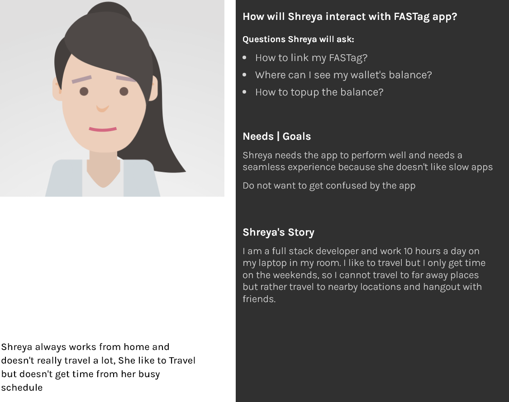
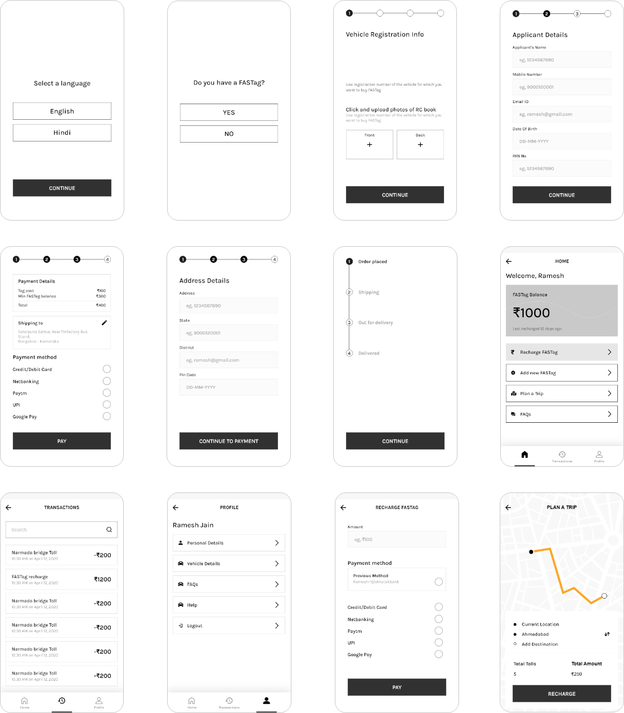

Redesigning FASTag App
Redesigned FASTag app has optimized flow for topping up balance in the wallet, getting the past transactions as quickly as possible, and seamlessly registering FASTag through the app. It took 5 days to redesign from scratch.
Redesigned FASTag app has optimized flow for topping up balance in the wallet, getting the past transactions as quickly as possible, and seamlessly registering FASTag through the app. It took 5 days to redesign from scratch.
FASTag is a Radio Frequency Identification Technology (RFID) introduced by the Government of India in October 2017 by the Ministry of Road Transport and Highway. This measure was taken keeping in scrutiny several inconveniences for both individual drivers and the nation at large.
As per statistics mentioned in a Times of India article, approximately Rs. 12000 crore is leaked annually in India at toll booth plazas. Two of the primary components of such loss are on account of fuel wastage and exhaustion of human resources at toll plazas.
While the monetary loss is a primary concern, another repercussion bypasses the common eye, i.e. air pollution. India is one of the worst countries in terms of air pollution with more than 14 cities exhibiting considerably high levels of air pollution which includes the national capital, Delhi.
Toll plaza, in that regard, is a primary contributor to the surge in air pollution levels in India. Hence, one of the agendas of implementing FASTag in India was to curtail such levels.
These are just very few UI design screenshots that I downloaded from their official Google playstore’s link. You can also view them at https://play.google.com/store/apps/details?id=com.fastaguser

I started my researching journey from playstore, as the application had only 3.3 stars, with many 1 star rating. So I thought this was the right place to start my research for users pain point.
The next step in research was to ask my friends and family members about the application because I have many friends that travel frequently to out station and have the need for FASTag. I interviewed 4 people, my uncle and three friends. Below mentioned were the questions asked by me.
Q1. Do you frequently use this application?
Q2. How do you feel using this application?
Q3. Tell me about the time when you got stuck in the app
Q4. How to recharge your FASTag wallet?
Q5. How do you feel when you have to recharge your FASTag wallet?
Q6. What changes to make in the current application according to you?
I found enough pain points from the reviews itself and interviews acted as the confirmation to these reviews.

 

Therefore I have introduced one new feature of Trip Top-up. On entering the starting and ending destination, this feature will show the difference of amount a user needs to top-up in the wallet if they do not have sufficient balance.

In the current application, everything is clustered up in one home screen which overwhelms the users.
Therefore in the redesigned app, three sections are made for more clarity of the options.

I have researched about the problems faced by the users and I have an idea of how and what will be the structure of the application. Now is the part to design the low fidelity wireframes.
The new feature was initially named as "Plan a Trip" but it didn't go well with the users, that's why I changed it to "Trip Topup". Label Plan a trip was confused as some kind of travel package instead of topping up for the trip.
In the "Trip Topup" feature, initially we showed the number of tolls and total amount both. When user would click on pay, then it would show the difference amount. But this didn't play well with the users. They just wanted to know the difference amount instead of other information I provided. So instead of showing number of tolls, I decided to show the amount in their wallet and the amount that needed to be paid for the Trip tolls.
Now it the time to make everything look beautiful and aesthetic. In this step I tried to unleash my creativity in the logical and user-centric wireframes